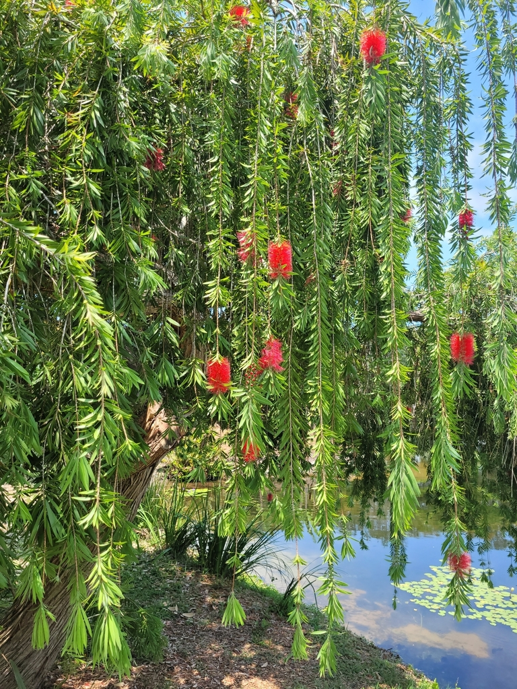

Native to eastern Australia, primarily along watercourses in Queensland and New South Wales, with a disjunct population in the Kimberley region of Western Australia. It grows naturally in moist habitats such as riverbanks, creek edges, and flood-prone areas.
The nectar-rich red spikes are magnets for Florida wildlife — especially hummingbirds, butterflies including zebra longwings, and honeybees. A high-value nectar source during warm months when many other plants have finished blooming. Small woody seed capsules provide food for birds and small mammals. The dense weeping canopy offers shelter year-round.
Held in small woody cup-like capsules clustered around the stems; can remain on the plant for years.
Bright red bottlebrush spikes 3–4 inches long, appearing mainly spring and summer but sometimes year-round.
Small gray or brown woody capsules that look like beads on a necklace, persisting long after flowering ends.
Narrow, pale green, lance-shaped. Strongly citrus-scented when crushed — the most reliable field identification feature.
The cascading weeping form is distinctive year-round. In bloom, the vivid red spikes are unmistakable. Crush a leaf to confirm with the citrus scent. Look for hummingbirds hovering at the branch tips.
The flowers are non-toxic and can be steeped to make a sweet edible tea or syrup. Not considered a food plant in Florida landscapes, but no toxicity to people or pets.